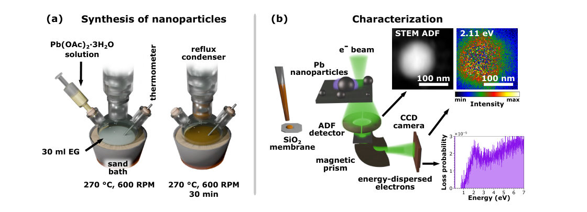
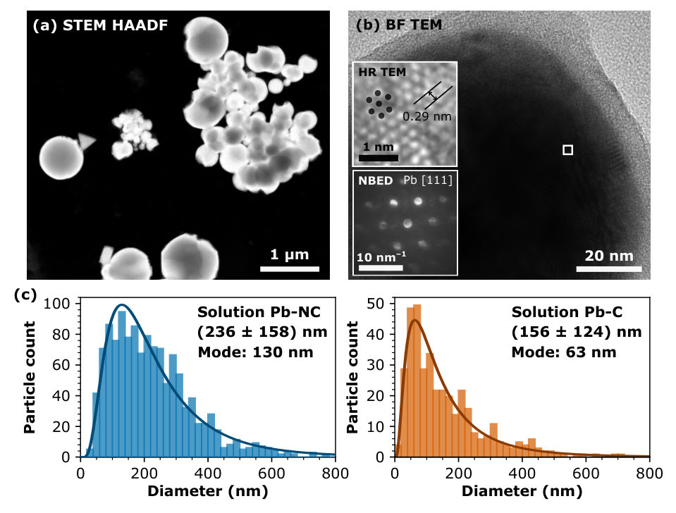
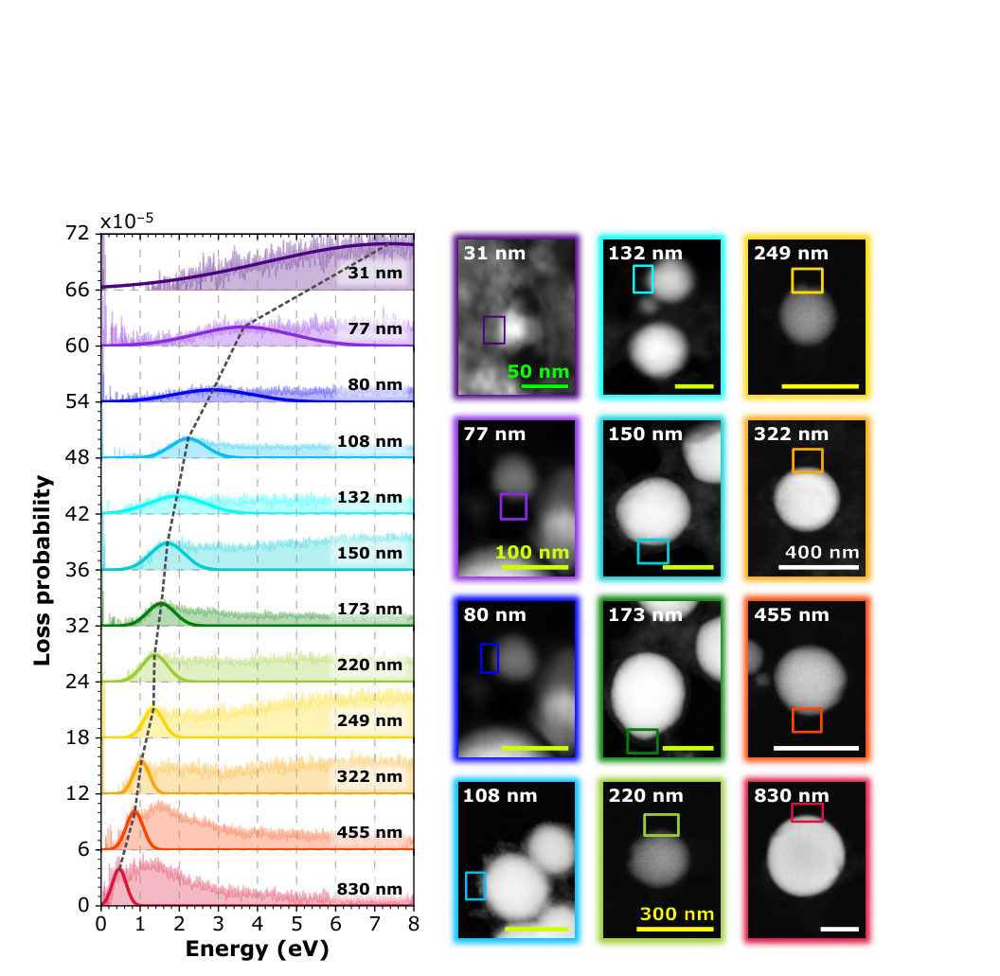
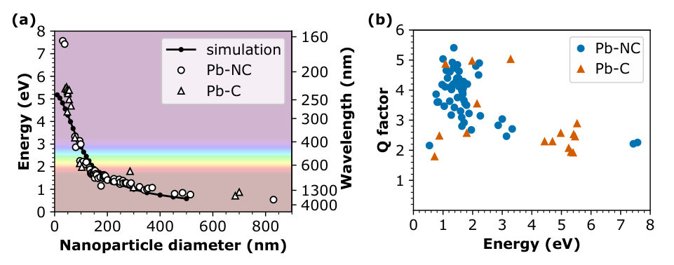

Authors: Z. Drogosz, E. I. Sfakianakis, K. Slawinska, A. Wereszczynski
Type: theory · Category: other · PDF: https://arxiv.org/pdf/2607.23616v1
Analysis basis: full PDF text, analyzed in chunks
Topic relevance: non-equilibrium dynamics 2/5 · Keldysh / 2PI / non-Gaussian methods 1/5 · analog quantum simulation 1/5 · correlated / nonlocal dissipation 1/5 · driven-dissipative phase transition 1/5 · methods for driven-dissipative 1/5 · non-equilibrium universality 1/5
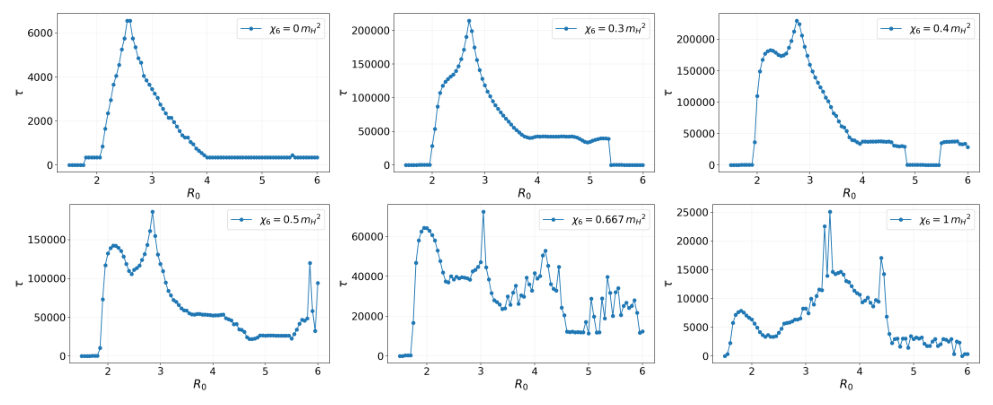
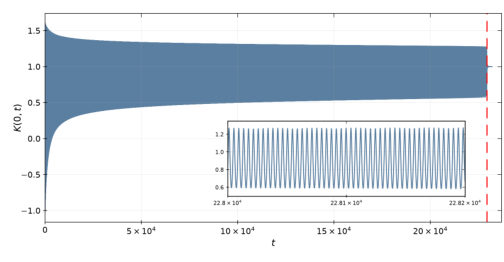
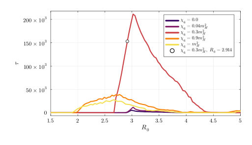
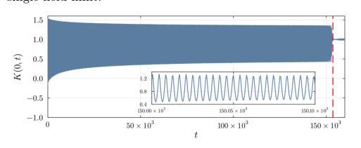
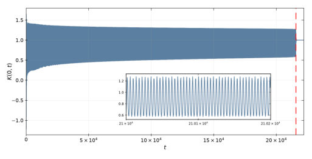
Summary. This work applies Standard Model Effective Field Theory to study oscillons—stable, localized energy packets—in the Higgs sector. By introducing a dimension-six operator, the authors demonstrate that the oscillon's decay lifetime is dramatically increased by many orders of magnitude. This suggests these structures could be long-lived relics relevant to early universe cosmology or electroweak physics.
Why it may be interesting. While focused on particle physics dynamics, the study of non-linear field evolution and stable solitonic solutions (oscillons) shares mathematical techniques with models used in quantum many-body systems, particularly those involving topological defects or coherent excitations.
Main problem. The study investigates the stability and longevity of oscillons (nonperturbative soliton-like solutions) within the framework of Standard Model Effective Field Theory (SMEFT). The core goal is to determine how higher-dimensional operators affect these classical field configurations.
Main result. Including a dimension-six operator in the Higgs potential dramatically extends the oscillon lifetime by orders of magnitude, suggesting that such structures can be long-lived relics in the early universe or during electroweak symmetry breaking.
Method. The analysis relies on solving coupled, non-linear partial differential equations derived from the generalized Lagrangian using numerical simulation techniques. Specific ansatze and gauges (like the temporal gauge) are employed to simplify the complex field dynamics.
Model / system. The system is based on the SU(2) bosonic sector of the Standard Model extended by a dimension-six operator, $O_6 = (\Phi^\dagger\Phi)^3$, modifying the Higgs potential. The fields include the Higgs doublet ($\Phi$) and associated gauge components ($W_\mu$).
Key observables. Oscillon lifetime ($ au$), which is measured as the time for stored energy to drop by 90%; oscillon frequency ($\omega$); and the localized Chern–Simons charge ($N_{CS}$).
Important parameters / regimes. The ratio of Higgs to W boson masses ($m_H/m_W=1.556$) and the dimensionless coupling parameter $\chi_6 = 16c_6m^2_W / (g^4\Lambda^2)$ are crucial parameters.
Assumptions / limitations. The analysis often assumes decoupling of the U(1) sector ($g'=0$) and utilizes specific gauges, such as the temporal gauge ($G=0$), for numerical tractability.
Figures summary. Figures illustrate the dependence of oscillon lifetime on initial conditions (like width $R_0$); representative time evolution showing enhanced lifetimes ($ au \sim 10^5 m^{-1}W$) in the Higgs channel; and field profiles confirming relaxation into stable, long-lived states.
Paper structure. The paper develops by first establishing the generalized potential via SMEFT. It then proceeds to solve the coupled equations of motion using numerical methods, analyzing single-field truncations before extending the analysis to the full five-field SU(2) sector while monitoring constraints like the Gauss law.
We show that the inclusion of a dimension-six operator in the Higgs potential has a dramatic impact on the stability of oscillons in the $SU(2)$ bosonic sector of the Standard Model, extending their lifetime by orders of magnitude. This happens for the physical value of the ratio between the Higgs and W boson masses, $m_H/m_W=1.556$ and for the dimension-six operator $O_6 = (Φ^\dagger Φ)^3$ whose coupling constant is below the current upper bound.
Authors: Jian-Hua Zeng, Zhi Wang, Qian Niu
Type: theory · Category: other · PDF: https://arxiv.org/pdf/2607.23764v1
Analysis basis: full PDF text, analyzed in chunks
Topic relevance: analog quantum simulation 2/5 · non-equilibrium dynamics 2/5 · Keldysh / 2PI / non-Gaussian methods 1/5 · spintronics-quantum-optics interface 1/5
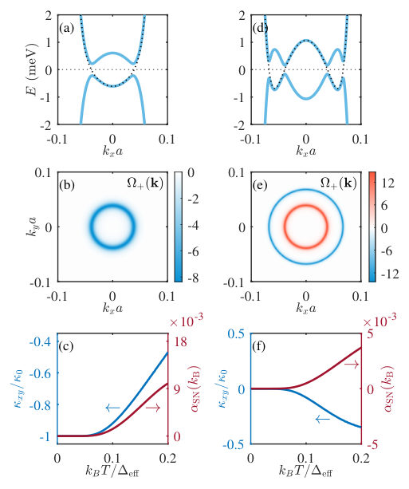
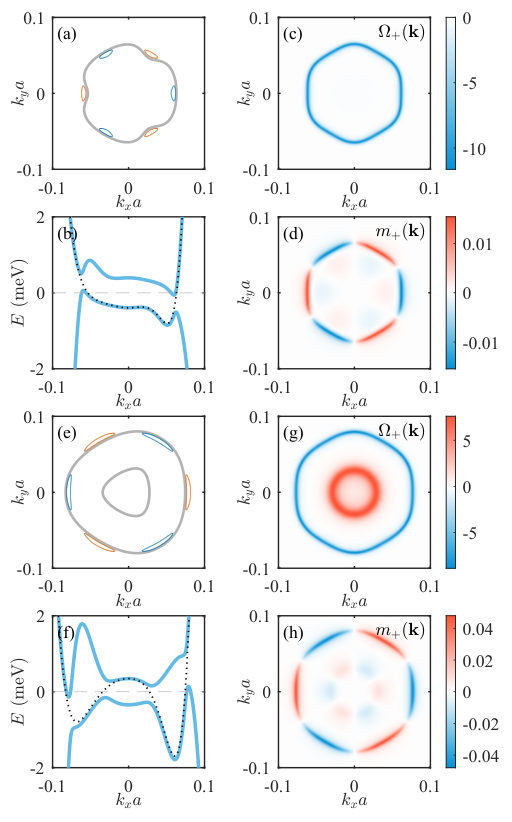
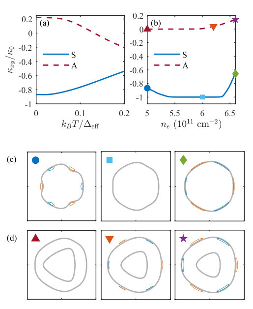
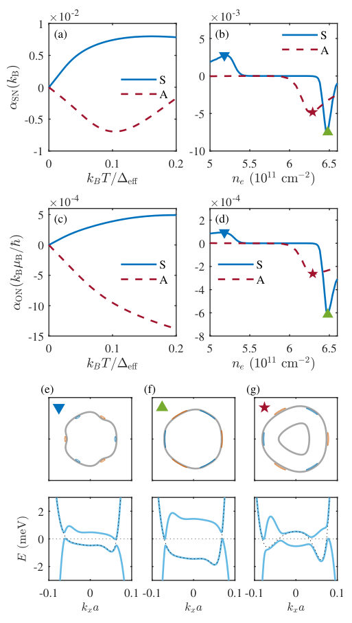
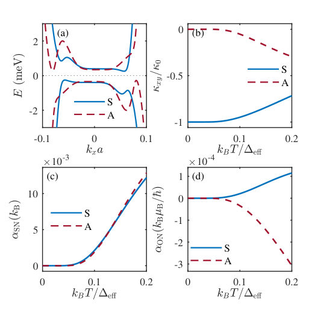
Summary. This paper theoretically examines the impact of Berry curvature on anomalous transport phenomena in chiral superconducting rhombohedral graphene. By modeling quasiparticles using a BdG Hamiltonian that accounts for trigonal warping, the authors show that the formation of Bogoliubov Fermi surfaces significantly alters these transports. The key finding is that this gapless behavior causes deviations from quantized thermal Hall values and strongly enhances Nernst responses.
Why it may be interesting. This work connects topological concepts (Berry curvature) directly to measurable transport properties (Nernst/Hall effects) in a highly tunable 2D superconducting material like graphene, which is relevant for quantum devices.
Main problem. The study investigates how Berry curvature effects of Bogoliubov quasiparticles modify anomalous transport responses (thermal/spin Nernst) in chiral superconducting rhombohedral graphene.
Main result. The presence of Bogoliubov Fermi surfaces, induced by trigonal warping, qualitatively modulates the anomalous Hall transports, causing a deviation from quantized thermal Hall conductivity and strongly enhancing spin- and orbital-Nernst responses.
Method. Theoretical calculations utilizing a two-band Bogoliubov-de Gennes Hamiltonian to model superconducting quasiparticles in momentum space.
Model / system. The physical system is chiral superconducting rhombohedral graphene. The analysis employs the BdG Hamiltonian, which incorporates normal-state dispersion warping ($\xi_a(k)$) leading to gapless Bogoliubov Fermi surfaces when trigonal warping is considered.
Key observables. Momentum-space Berry curvature ($\Omega$), orbital magnetic moment ($m$), anomalous thermal-Hall conductivity ($\kappa_{xy}$), and anomalous spin/orbital Nernst coefficients ($\alpha_{SN}, \alpha_{ON}$).
Important parameters / regimes. Trigonal warping strength, superconducting gap magnitude ($\Delta$), carrier density ($n_e$), and temperature (analyzed in low-T limits).
Assumptions / limitations. The analysis compares regimes: a fully gapped state (neglecting $\xi_a(k)$) versus a gapless state where Bogoliubov Fermi surfaces form due to non-vanishing antisymmetric dispersion ($\xi_a(k) eq 0$).
Figures summary. Figures illustrate quasiparticle spectra, Berry curvature distributions, and the temperature dependence of transport coefficients ($\kappa_{xy}/\kappa_0$, $\alpha_{SN}$, $\alpha_{ON}$) for both gapped and gapless regimes.
Paper structure. The paper progresses by first analyzing the fully gapped state (Section III), then introducing the mechanism causing gaplessness due to trigonal warping, and finally detailing transport calculations in this gapless regime (Section IV).
We study the Berry curvature effects of the Bogoliubov quasiparticles in chiral superconducting rhombohedral graphene. Using a two-band Bogoliubov-de Gennes Hamiltonian to describe the superconducting quasiparticles, we calculate the momentum-space Berry curvature, the orbital magnetic moment, the anomalous thermal-Hall and the anomalous spin- and orbital-Nernst transport of the chiral $p$-wave superconducting states. We investigate the impact of the normal-state energy band warping in rhombohedral graphene, which can cause the Bogoliubov Fermi surface for quasiparticle excitations. We find that the Bogoliubov Fermi surface qualitatively modulates the anomalous Hall transports, inducing a deviation of the thermal Hall conductivity from the quantized value and strongly enhancing the spin- and orbital-Nernst responses.
Authors: Thiagarajan Maran, Yoshiya Uwatoko, Sathea Suweatha M N, Sonika Jangid, R. P. Singh, Arumugam Sonachalam, Sathiskumar Mariappan
Type: experiment · Category: other · PDF: https://arxiv.org/pdf/2607.23056v1
Analysis basis: full PDF text, analyzed in chunks
Topic relevance: Keldysh / 2PI / non-Gaussian methods 1/5 · analog quantum simulation 1/5 · driven-dissipative phase transition 1/5
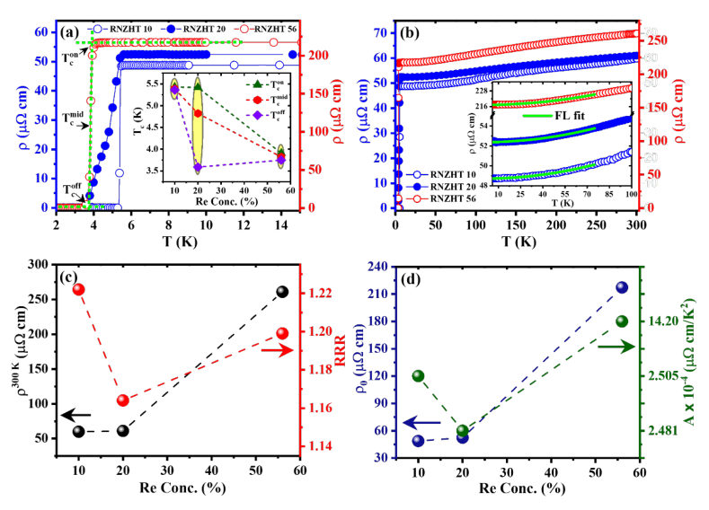
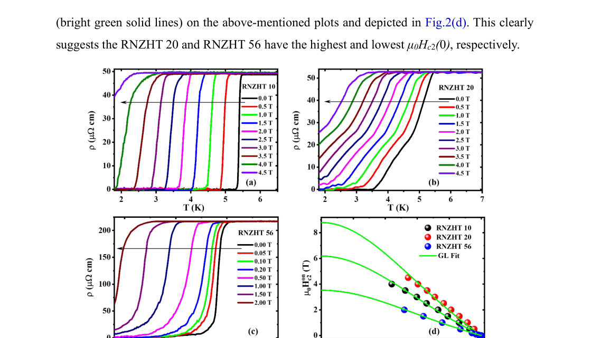
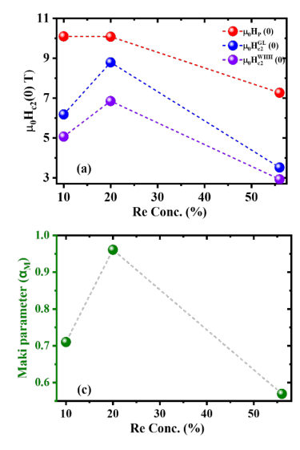
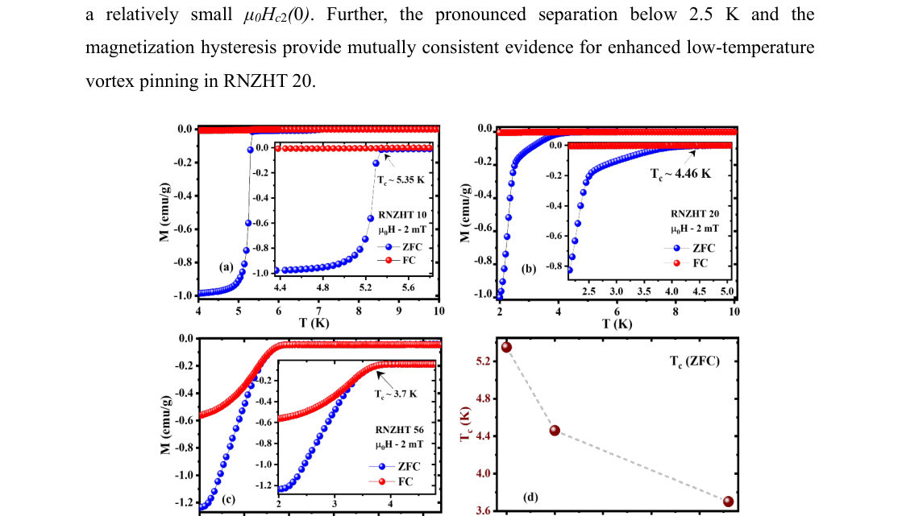
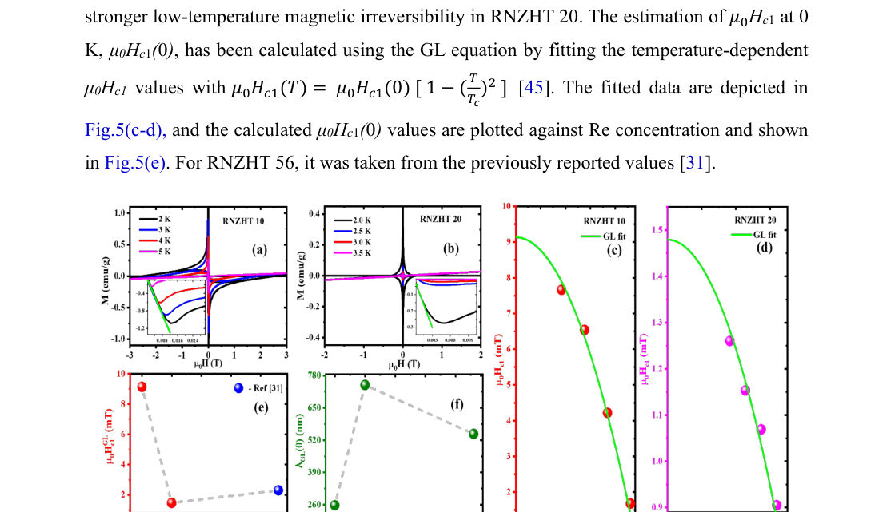
Summary. This work investigates how chemical doping and hydrostatic compression tune the superconducting properties of Re-based high-entropy alloys. The key finding is that the sign of the temperature dependence of Tc under pressure changes dramatically when the crystal structure undergoes a phase transition, highlighting structure as a primary control knob for superconductivity.
Why it may be interesting. While focused on condensed matter superconductivity, the systematic investigation into how external tuning parameters (chemical composition and pressure) couple to fundamental electronic/structural properties mirrors complex many-body physics problems relevant to quantum materials research.
Main problem. To comparatively study how chemical substitution (varying Re concentration) and external physical pressure affect the electronic and superconducting properties of Re-based quinary high-entropy alloys (HEAs).
Main result. The pressure coefficient of Tc changes sign across a structural transition (bcc to hcp), establishing that crystal structure is a key organizing variable governing superconductivity under compression. Chemical substitution and hydrostatic compression are complementary but non-equivalent tuning routes.
Method. Measurements included electrical resistivity ($ ho(T)$) at ambient and high pressure up to 8 GPa, and temperature/field-dependent magnetization ($M(T)$) using ZFC/FC protocols.
Model / system. The study focuses on Re-based quinary HEAs with the general formula [Nb0.67-xRe][TiZrHf]0.33 for compositions x = 0.10, 0.20, and 0.56.
Key observables. Superconducting transition temperature (Tc), upper critical field ($\mu_0H_{c2}$), Ginzburg-Landau parameter ($\kappa$), Maki parameter ($\alpha_M$), and the pressure coefficient of Tc ($dT_c/dP$).
Important parameters / regimes. Pressure range up to 8 GPa; Re concentration (x = 0.10, 0.20, 0.56); Temperature range down to 1.8 K.
Assumptions / limitations. The analysis relies on established superconducting theories like GL and WHH models for fitting magnetic measurements.
Figures summary. Figures show low-temperature resistivity ($ ho(T)$) used to determine Tc, and magnetization curves ($M$ vs $H$) analyzed using ZFC/FC protocols to extract critical fields and parameters.
Paper structure. The paper systematically presents comparative studies across three compositions, analyzing the impact of Re content on Tc suppression, followed by detailed high-pressure measurements that reveal structure-dependent changes in the pressure dependence of Tc.
We report a comparative study of chemical- and physical-pressure effects on the electronic and superconducting properties of the Re-based quinary high-entropy alloys (HEAs) [Nb0.67-xRex][TiZrHf]0.33 (x = 0.10, 0.20, and 0.56). Increasing Re concentration suppresses the superconducting transition temperature Tc from 5.4 to 3.9 K while producing positive, composition-dependent cocktail-effect ratios. Field-dependent transport and magnetization establish all three compositions as strongly type-II superconductors and identify x = 0.20 as the most distinctive composition, with the largest upper critical field and Ginzburg-Landau parameter and a Maki parameter close to unity. Most importantly, the pressure coefficient of Tc changes sign across the bcc-hcp structural change: dTc/dP is positive for the bcc x = 0.10 and 0.20 samples, with values of approximately 0.018 and 0.053 K/GPa, respectively, but negative for the hcp x = 0.56 sample, with a value of approximately -0.033 K/GPa. This systematic contrast within a single chemically related alloy series establishes a robust structure-associated superconducting response and identifies crystal structure as a key organizing variable under compression. Metallic transport and superconductivity remain robust up to approximately 8 GPa in all three compositions. These results reveal that chemical substitution and hydrostatic compression are complementary but nonequivalent routes for tuning superconductivity in Re-based HEAs.
Authors: Chang-An Li, Yulin Qin, Bo Fu, Jian Li
Type: theory · Category: other · PDF: https://arxiv.org/pdf/2607.24208v1
Analysis basis: full PDF text, analyzed in chunks
Topic relevance: analog quantum simulation 1/5 · driven-dissipative phase transition 1/5
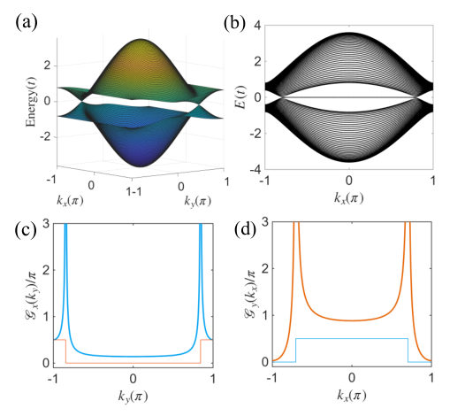
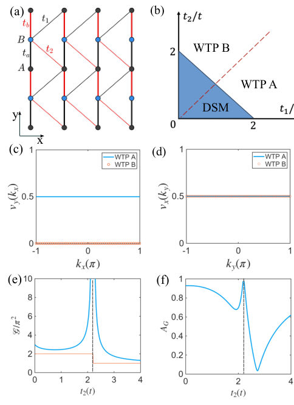
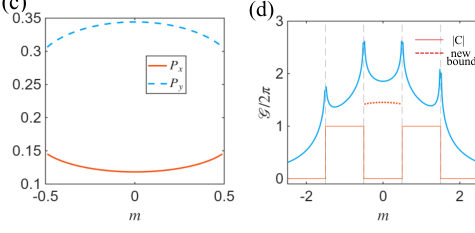
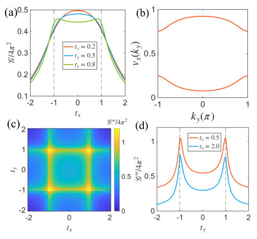
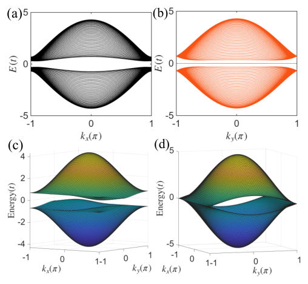
Summary. The paper introduces a dimension-reduction framework to derive new, non-trivial lower bounds for the Quantum Metric Integral (QMI) in 2D quantum systems. By decomposing the QMI into nested 1D components, it successfully establishes topological constraints even when conventional bulk topology (like the Chern number) is zero. This generalizes fundamental relationships between geometry and topology across various models, including higher-order topological insulators.
Why it may be interesting. This work provides a powerful generalization of geometric quantization tools, extending topological protection from global bulk properties (like Chern numbers) to local or lower-dimensional features, which is crucial for understanding novel quantum materials.
Main problem. The primary goal is to generalize the relationship between quantum geometry (specifically the Quantum Metric Integral, QMI) and topological invariants beyond systems where the conventional Chern number or Berry curvature vanishes.
Main result. The authors establish non-zero lower bounds on the QMI by decomposing the 2D integral into nested 1D components, successfully bounding it using lower-dimensional topological obstructions like winding numbers or higher-order invariants such as the quadrupole moment.
Method. A dimension-reduction framework is employed to decompose the 2D QMI into a sum of nested 1D integrals. These 1D integrals are then bounded below by quantized topological invariants derived from chiral symmetry or Wannier band analysis.
Model / system. The theory is applied to several models, including general 2D systems, the tilted Su-Schrieffer-Heeger (SSH) model, anisotropic Wilson-Dirac models, and higher-order topological insulators like the Benalcazar-Bernevig-Hughes (BBH) model.
Key observables. Quantum Metric Integral (QMI), Chern number ($C$), 1D QMI components, Wannier band winding numbers ($ u$), and the quadrupole moment ($q_{xy}$).
Important parameters / regimes. The analysis focuses on regimes where $C=0$ or Berry curvature vanishes, making the standard topological bounds ineffective.
Assumptions / limitations. The method relies fundamentally on decomposing the 2D integral into nested 1D integrals and utilizing specific mathematical inequalities (e.g., Cauchy-Schwartz) to relate these components to lower-dimensional topology.
Figures summary. Figures illustrate the QMI dependence on parameters in the BBH model, confirming the bound $G_w \geq 4\pi^2 q_{xy}$, and show energy spectra for the SSH model exhibiting zero-energy edge modes protected by chiral symmetry.
Paper structure. The paper develops a general dimension-reduction framework first, applying it to specific models like the SSH and Wilson-Dirac systems to derive bounds based on 1D topology. It then extends this methodology to higher-order topological phases using Wannier bands to relate QMI to invariants like the quadrupole moment.
The quantum metric integral (QMI) in two-dimensional (2D) systems is conventionally bounded from below by the Chern number. For systems with zero Chern number or identically vanishing Berry curvature, however, this bound becomes trivial and provides no useful geometric constraints. Here, we develop a dimension-reduction framework that decomposes the 2D QMI into lower-dimensional components in a nested-loop way. With this method, we establish a nonzero lower bound on the QMI arising from one-dimensional topological obstructions even when the conventional 2D topology is trivial. We explicitly demonstrate this mechanism in a tilted 2D Su-Schrieffer-Heeger model and an anisotropic Wilson-Dirac model with chiral symmetry. The resulting lower bounds of QMI are determined by the quantized Wannier bands along two different directions. We further investigate the quantum geometry in higher-order topological phases following the same strategy. By introducing Wannier-band basis obtained from the nested Wilson loop, we demonstrate that the Wannier-band QMI is bounded from below by the higher-order topological invariant, e.g. the quadrupole moment in Benalcazar-Bernevig-Hughes model. Our results establish nonzero lower bounds on QMI from a dimension-reduction framework, thereby generalizing the fundamental relation between quantum geometry and topology.
Authors: Michael Foltýn, Michal Kvapil, Kristýna Bukvišová, Tomáš Šikola, Michal Horák
Type: experiment · Category: other · PDF: https://arxiv.org/pdf/2607.24340v1
Analysis basis: full PDF text, analyzed in chunks
Topic relevance: interference shaping light 1/5 · quantum optics experiment 1/5




Summary. This work establishes lead nanoparticles as a highly promising multispectral plasmonic platform due to their ability to support localized surface plasmon resonances across an exceptionally broad spectrum, spanning from near-infrared to deep-ultraviolet. The authors synthesize and characterize these particles using STEM-EELS, demonstrating that the LSPR properties are systematically tunable by controlling the nanoparticle diameter. This finding significantly expands the known elemental metals suitable for advanced optical applications.
Why it may be interesting. While focused on plasmonics rather than quantum information directly, the precise control over optical resonances in the deep UV region is crucial for developing novel quantum light sources or detectors that interact strongly with matter at high energies.
Main problem. The study investigates lead (Pb) as a plasmonic material, aiming to characterize its localized surface plasmon resonances (LSPR) across the deep-ultraviolet to near-infrared spectrum.
Main result. Lead nanoparticles exhibit the most extensive spectral tunability among elemental metals tested, supporting stable plasmonic performance from the near-infrared into the deep-ultraviolet region. The measured quality factors ($Q$ factor) are systematically correlated with particle size.
Method. The research combines chemical synthesis of spherical Pb nanoparticles with advanced characterization techniques like STEM-EELS to measure LSPR spectra, supplemented by numerical simulations.
Model / system. The physical system is chemically synthesized lead nanoparticles (Pb NPs) in solution. The analysis models the interaction of light with these nanospheres, using the dipole approximation for LSPR and comparing experimental EELS data against theoretical calculations.
Key observables. Localized Surface Plasmon Resonance (LSPR) energy ($E_{ ext{peak}}$), loss probability maxima ($I_{\max}$), full width at half maximum ($\Delta E$), and the derived quality factor ($Q$ factor).
Important parameters / regimes. Particle diameter (ranging from 31 nm to 830 nm), spectral range (near-infrared to deep-ultraviolet, below 200 nm).
Assumptions / limitations. Plasmon peaks are fitted using Gaussian functions for simplicity, and the analysis relies on comparing experimental EELS data with numerical simulations.
Figures summary. Figures show STEM/TEM micrographs confirming morphology and size distribution; EEL spectra track LSPR shifts vs. diameter; and plots compare measured $Q$ factors against theoretical predictions across the spectrum.
Paper structure. The paper follows a structure of problem identification (lack of DUV data for Pb), methodology description (synthesis, STEM-EELS characterization), presentation of size-dependent LSPR measurements, comparison with simulations, and concluding remarks on its multispectral potential.
Among the other non-noble metals, lead (Pb) is a material of particular interest for plasmonic applications in the deep ultraviolet spectral region. However, experimental studies on its plasmonic performance have not yet been conducted. In this work, the dependence of the optical properties of spherical lead nanoparticles on their diameter is demonstrated. The plasmonic performance of chemically synthesized lead nanoparticles is evaluated at the single-particle level by means of a combination of scanning transmission electron microscopy and electron energy loss spectroscopy. Our findings demonstrate that these nanoparticles support localized surface plasmon resonances across the entire spectrum from near-infrared to deep-ultraviolet. This range was identified as the most extensive among all plasmonic elemental metals, extending to wavelengths below 200 nanometers. Consequently, lead nanoparticles exhibit stable plasmonic performance over a remarkably broad wavelength range, thereby substantiating their potential as a multispectral plasmonic platform.